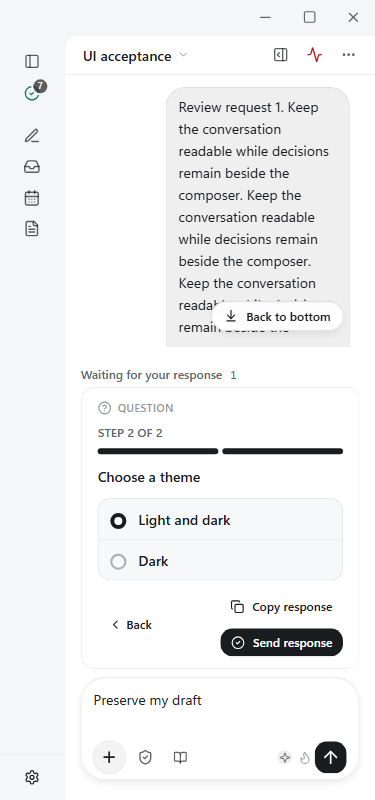

让决策回到输入区
运行时审批 → 工作区权限 → 提问／计划确认。一次突出一项，处理后恢复原草稿与已选答案。
所有请求沿用输入框的灰阶材质、25 px 圆角、标题和底部按钮。提问与审批接管输入位置，正文保留独立滚动。这里优先展示运行时审批作为统一样式参照。
与上一轮对照
调整前：提问卡和普通输入框同时显示
调整后：决策接管输入位置调整前：计划作为输入框上方的独立内容 调整后：计划确认共享决策面板
调整后：计划确认共享决策面板2026-11-21 · agent 驱动。193 项定向测试、12 条 Electron 场景通过；主机权限生成与落盘为真实服务，其余会话输入使用可控事件与历史数据。